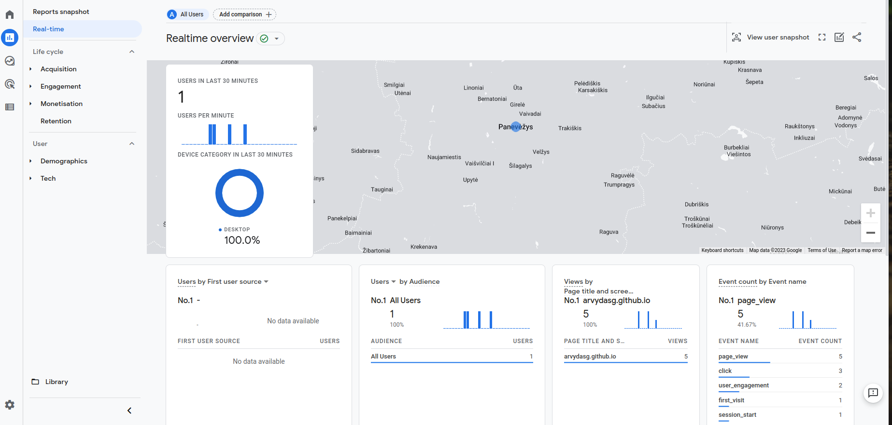

A year or so ago I had to set up Google Tag Manager and Google
Analytics to a few of my client websites for marketing purposes. I
have not documented the process back then, but will do so now as I am
setting it up for this site. (Yes, I know that you have been here ;) )
Setup
Setup GTM(Google Tag Manager).
It will act as single place where you put all your tags in the future.
Good for managing and debugging.
You might get such a message "Universal Analytics properties will
stop collecting data starting 1 July 2023. It’s recommended that you
create a Google Analytics 4 property instead." You can ignore it,
but make sure you are creating Google Analytics 4 property. Remember
this for the later steps.
Set up Data Streams to start collecting data
Get the MEASUREMENT ID, in my case it's something similar to
G-NYYXE875PQ
Back to GTM
Go to Tags, clink on new, tag configuration
Select Google Analytics: GA4 Configuration
Add your MEASUREMENT ID into the provided field
In the same page - click on trigger field to add a new trigger
Choose "All Pages"
Name your tag, for example "GA4 Configuration - G-NYYXE875PQ"
Save the tag
Go to the preview mode again, upon your page refresh you now see the
"debugger active" and next to "Tags Fired" you will see your tag
name "GA4 Configuration - G-NYYXE875PQ", the data should get
transmitted. Nice and easy.
While still in preview mode, go to Google Analytics admin site, find
"Debug view" in one of the sidebars and open it.
You will see the data flowing in real time from your preview mode to
your GA4 tag. Pretty cool. This allows you to debug interactions to
your website on a more granular level.
You can(or anyone else can) install a "Google Analytics Debugger"
extension to their browser and when they navigate through your
page - your debugger view will see those changes.
Go back to your main admin GTM site - click on "Submit" to save your
changes to the environment. In the "Version field" field enter
"Installed GA4" for example and click Publish.
If everything went successfully, you can go to you GA admin page,
choose Reports -> Real-Time and you should see something like this
:)
Congrats!

p.s.
If you dont see the data just yet, be patient, it should appear
sooner than later.